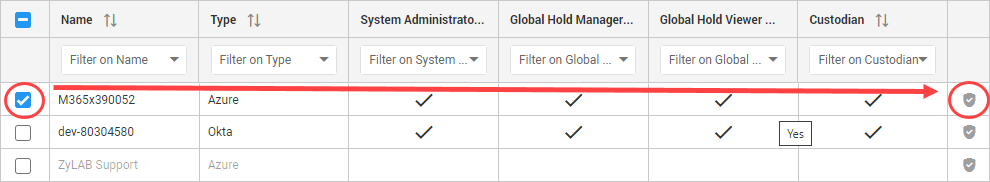
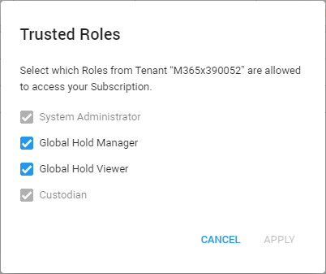

Select the tenant for which you want to define the trusted roles. Trusted roles are allowed to access your subscription.
For that tenant select Modify Tenant Trusted Roles.

Define the trusted roles for this tenant and click Apply.

Now, each user assigned with a Trusted Role is allowed access to your subscription.
In User Overview, you can see whether a role assigned to a tenant is trusted (green) or not (grayed out).
Users of a tenant with no trusted roles, do not have access to your subscription.